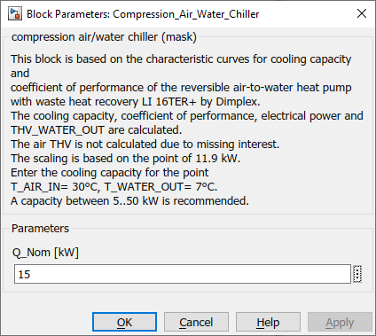

Compression_Air_Water_Chiller
Path: CARNOT/Source/Chiller
Purpose:
Model of a reversible air to water chiller or heat pump.
Description:
This block is based on the characteristic curves for cooling capacity and
coefficient of performance of the reversible air-to-water heat pump with waste
heat recovery LI 16TER+ by Dimplex. The cooling capacity, coefficient of
performance, electrical power and THB_WATER_OUT are calculated. The air THB is
not calculated due to missing interest. The scaling is based on the point of
11.9 kW. Enter the cooling capacity for the point T_AIR_IN = 30 °C,
T_WATER_OUT = 7 °C. A capacity between 5..50 kW is recommended.
Input:
| THB_water_in | : | Thermo-Hydraulic Bus of the water inlet (return line) |
| T_AIR_IN | : | temperature of the inlet air in °C (typically outdoor ambient temperature) |
| control | : | control signal of the chiller in 0..1 |
Output:
| THB_water_out | : | Thermo-Hydraulic Bus of the water outlet (flow line) |
| COP | : | Coefficient Of Performance in - |
| P_el | : | electrical power consumption in W |
| Q_cold | : | thermal power in W (THB_water_in to THB_water_out) |
Parameters and Dialog Box:

Examples:
Open the example explorer from the Matlab command window
ExampleBrowser
or load the examples via the CARNOT library.
Characteristics:
| Direct Feedthrough | : | Yes |
| Sample Time | : | Inherited from driving block |
| Vectorized | : | No |